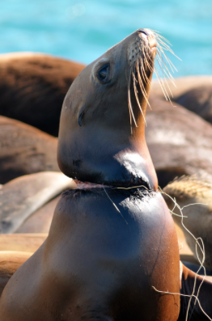

Save Our Planet
Why do we need to stop using plastic?

Do you think that using reusable plastic isn't necessary? If you think so, you are wrong! Using reusable plastic instead of disposable plastic is important. The plastic that we throw ends up in a fish’s stomach. And
when we eat the fish it ends up in our stomach! Every year an average human eats 250 grams of microplastics. We have to save our planet from being a heap of plastic. It is up to us to change the future. Right now we are not doing very
well.
Over 100,000 marine creatures die in the world every year because of plastic that we throw. If we use reusable plastic, then we could save these marine creatures. The plastic
that we throw away will never disappear. Once we make plastic, it stays forever. Most of the plastic that we throw finds its way into the ocean. But that isn't the end. Some sea creatures confuse it for food and swallow it. After all,
we eat sea creatures. According to BBC earth 12.7 million tons of plastic is entering the ocean every year. If our disposable plastic continues at this rate by 2050, there will be more plastic than fish in the sea. Only a lucky fish will
be able to go through the beach without swallowing a piece of plastic. Our oceans are getting filled with plastic faster than we can remove them or they can decompose.
Do you think that using disposable
plastic will be cheaper? If you think so, you are wrong. Studies show that by switching to reusable plastic, you can save $1,400 every year. Have you ever paid your bill for food and then when you ask for a plastic container they ask you
for more money? If you have been through that then you know what I mean. Not only does it save money but also time. If you bring your reusable plastic items, you won't have to waste your time asking for a disposable item. Have you ever
waited in a queue for hours because everybody is taking takeaways and waiting for the shop to pack their lunch? So why bother wasting time and money with disposable plastic?
Disposable plastic may
look clean in the shop. But it only looks nice until it's in the landfills. I strongly suggest avoiding them at all costs. Most people probably think that landfills do not smell good and they also think that they are also an eyesore. According
to national geographic, 79% percent of our plastic ends up in landfills. Not only this but when plastic breaks into smaller pieces leaves chemicals in the ground making it hard to grow in the same soil. If this doesn't stop, estimates
suggest that by 2050 we will have 12 billion metric tons of plastic in landfills on earth.
Reusable plastic doesn’t only look cleaner but it also saves lives! Taking in that we can save marine creatures,
it saves time and money and it also looks better on our planet, reusable plastic is the way to go. There is already a lot of plastic. But reducing our plastic consumption should be our next goal as humans. If it is necessary to use disposable
plastic, recycle it. Stay in the future, and use reusable plastic.